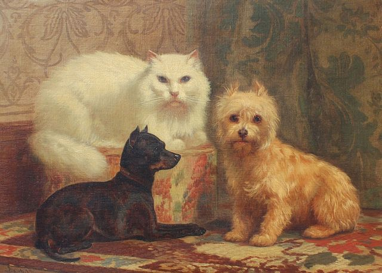

Bienvenu sur l'animalier - Votre espace de communion avec les annimaux 🐾
Bienvenue sur l'animalier, votre site vitrine dédié aux amoureux des animaux ! Ici, nous répertorions une collection passionnante de pages informatives et inspirantes sur les chiens, les chats, et bien d'autres compagnons à quatre pattes. 🐶🐱
Explorez nos catégories :